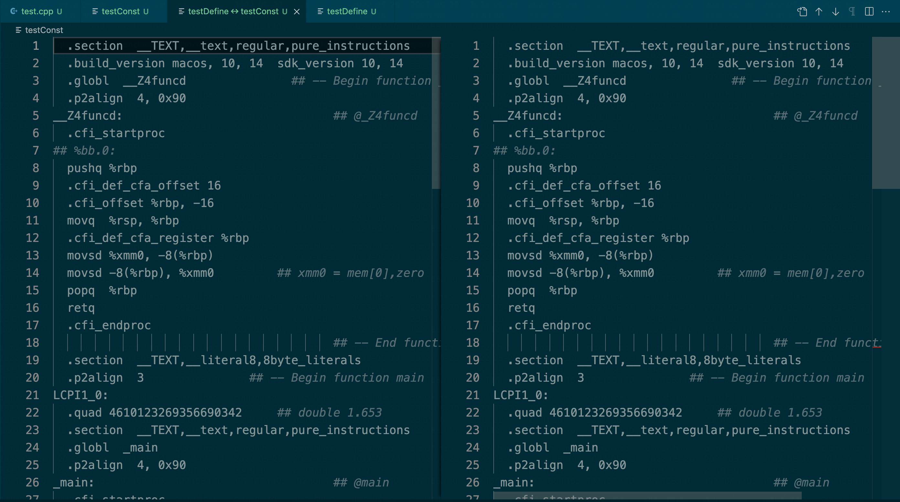
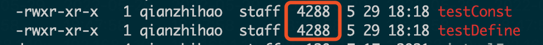

前一段时间一直疫情，在家做饭洗碗好费时间，工作也好忙，学的东西就比较碎，好久没写博客了 hh。
正好前段时间在看《Effective C++》，在工作一段时间后再看，感觉之前还是有很多不太注意的细节，这次的笔记想把其中提到的所有条款概括记录一下加强下记忆。
# 条款 1：视 C++ 为一个语言联邦
c++ 继承了结构化语言 c 的特性，自身扩展出了 C with Class 的面向对象特性，还有 Template C++ 的泛型编程方式和对 STL 程序库的使用，这几种成分都融合在 c++ 中，因此对于不同成分需要使用不同的风格（不过我其实感觉平时使用 stl 时没有什么特别的规范，可能还没有意识到他的特殊，等后面了解了再来总结）
# 条款 2：尽量以 const，enum，inline，替换 #define
书中提到这点主要是由于以下原因：
# define ASPECT_RATIO 1.653
const double AspectRatio = 1.653;
此外对浮点常量而言，使用常量可能比是要用 #define 导致较小量的码，因为预处理器 “盲目地将宏名称 ASPECT_RATIO 替换为 1.653” 可能导致目标码出现多份 1.653，若改用常量 AspectRatio 绝不会出现相同的情况。
但是经过测试：
const double I_NUM = 1.653; | |
// #define I_NUM 1.653; | |
double func(double i) | |
{ | |
return i; | |
} | |
int main() | |
{ | |
double i1 = I_NUM; | |
double i2 = I_NUM; | |
double i3 = I_NUM; | |
func(i1); | |
func(i2); | |
return 0; | |
} |
这段代码不管使用 const 还是 #define，在 c++11 和 c++98 标准下，编译出的汇编是完全一致的：

编译出来的可执行文件大小也完全一致：

所以我猜这个弊端可能已经被编译器优化了。
然后第二个 #define 的弊端是 #define 假如不用 #undef 的话默认作用域是整个文件，不够灵活，不像 const 静态变量可以通过放入类通过 private、public 等权限修饰词或是写成全局变量去控制其作用范围。
但是 const 静态变量有一个问题是声明数组时，大小需要是一个编译期常量，此时假如不使用宏的话，书中提到了一个可以解决的技巧：the enum hack。
class GamePlayer { | |
private: | |
enum { NumTurns = 5 }; | |
int scores[NumTurns]; | |
}; |
通过使用 enum，可以创建出一个编译期间的常量，解决 const 静态变量无法作为数组大小的问题。
# 条款 3：尽可能使用 const
这点挺好理解也挺好实践，和权限最小化原则是一个道理，每个函数、每个成员的权限尽可能低可以一定程度减少错误的发生。
不过书中关于这点提到了两个概念：bitwise constness (又称 physical constness) 和 logical constness。大致意思分别是实际成员数据未进行改变值的操作，和实际使用时逻辑上的数值未改变。编译器对 const 通常进行的检查是遵循 bitwise constness 的，因为这个规则方便检查，但我们想使用的往往是 logical constness。例如当我们的一个类为了提高访问速度，维护着一些缓存数据时，我们希望的是实际数据不改变，但是又需要更新缓存，这时编译器的 const 就不是我们想要 logical constness 了。这种情况就可以将缓存的成员变量声明成 mutable 变量。
# 条款 4：确定对象被使用前已先被初始化
这点也是学 C++ 的老生常谈了～（不过我至今不太理解 C++ 为什么不给类中的基础变量提供初始值。假如为了效率不提供初始值可以不初始化的话，其实牺牲了程序的稳定性，所以实际现在使用都会加上初始值，其实也没省到效率，有点费解。）
# 5. 总结
以上就是《Effective C++》第一章的内容了，要点其实就是上面各个条款的标题了。虽然书很老了但不得不说还是能有所收获的，有些规则可能如今比较普遍或者过时了，但还是值得思考和研究的。
# 参考资料
- 《Effective C++》—— Scott Meyers